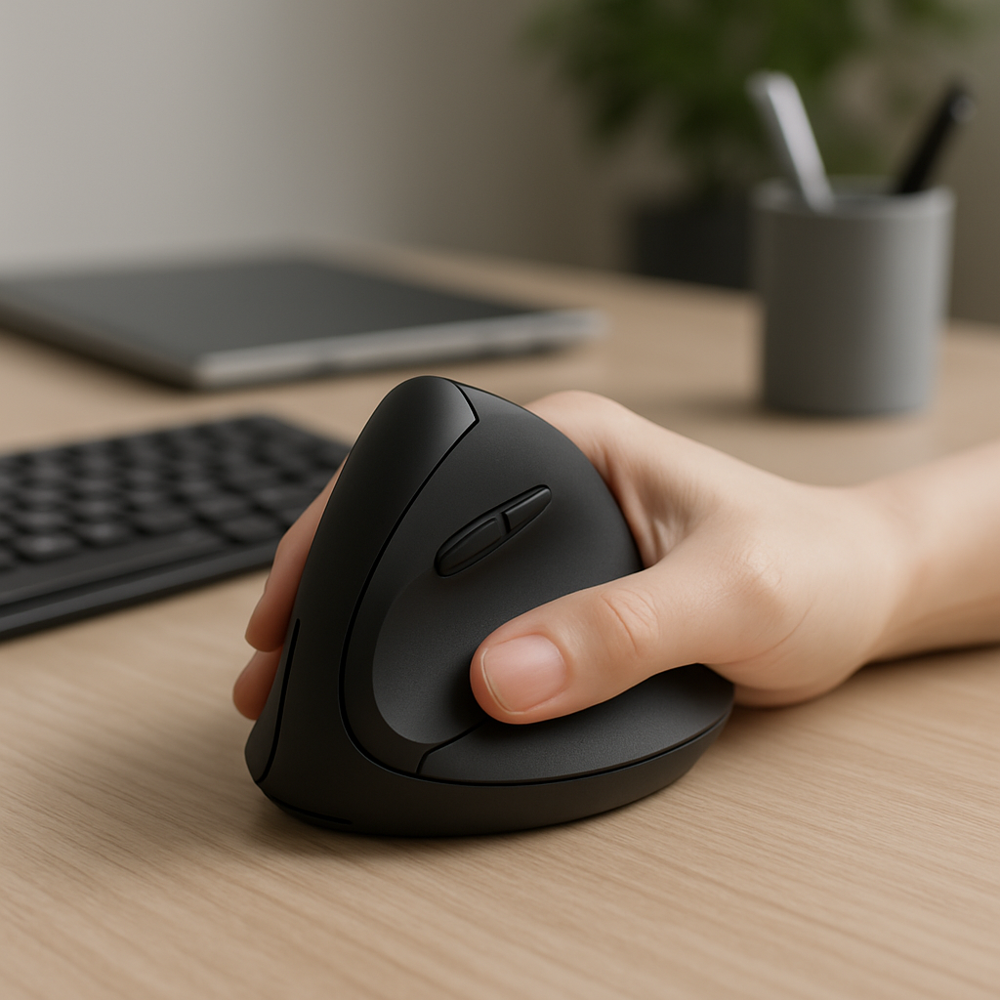

TL;DR
- The best ergonomic mice for small hands enhance comfort and productivity.
- Choose based on your specific needs—precision, gaming, or general use.
- Costs range from $30 to $100 depending on features and brand.
- Ensure the mouse fits your hand size for optimal use.
- Avoid common mistakes like neglecting DPI settings and overusing wrist motion.
Scenario
Meet Jane, a 28-year-old marketing analyst who spends over 8 hours a day on her computer. With small hands, she often feels hand strain using traditional mice. Jane is looking for a solution that gives her both comfort and efficiency without breaking the bank. She needs to work with various software, from design tools to spreadsheets, and occasionally plays casual games.
Workflow
- 1. Research (30 minutes): Start by gathering information on ergonomic mice suitable for small hands.
- 2. Compare Options (1 hour): Look through user reviews and comparisons online to make informed decisions.
- 3. Try Mice (2 hours): If possible, go to a retail store to physically test options that interest you.
- 4. Purchase (15 minutes): Order your chosen ergonomic mouse either online or in-store.
- 5. Setup (30 minutes): Unbox, install necessary drivers, and adjust settings for optimal use.
Tool options
- Logitech MX Anywhere 3: Best for versatile office use. Great precision and customizable buttons.
- Anker 2.4G Wireless Vertical Mouse: Best for wrist comfort. Vertical design helps reduce strain.
- Razer Basilisk X Hyperspeed: Best for casual gaming. Combines ergonomic design with gaming performance.
Quick comparison
| Option | Best for | Cost | Gotcha |
|---|---|---|---|
| Logitech MX Anywhere 3 | Office versatility | $79.99 | Battery life can be less than expected with heavy use. |
| Anker 2.4G Wireless Vertical Mouse | Wrist comfort | $29.99 | May feel bulky to some users. |
| Razer Basilisk X Hyperspeed | Casual gaming | $59.99 | Requires optional software for full features. |
Common mistakes
- Choosing a mouse based solely on brand rather than fit.
- Ignoring the importance of DPI settings for specific tasks.
- Over-relying on wrist movements instead of arm movements.
- Failing to take breaks during prolonged computer use.
- Neglecting to try the mouse before buying if possible.
- Not considering the weight of the mouse affecting control.
- Forgetting to customize button functions based on your workflow.
- Assuming all ergonomic designs are the same.
Templates
Checklist for Choosing an Ergonomic Mouse:

- Measure your hand size.
- Decide on wired vs. wireless.
- Determine needed DPI settings.
- Read at least 3 user reviews.
- Check return policy before purchasing.
Setup Timeline Template:
- Day 1: Research and compare options.
- Day 2: Purchase mouse and confirm delivery date.
- Day 3: Setup and customize mouse settings.
- Day 4: Evaluate comfort and adjust as needed.
FAQ
- 1. What is the ideal size for ergonomic mice? Most ergonomic mice designed for small hands have a length of 4.5 to 5 inches.
- 2. Are wireless ergonomic mice as effective? Yes, wireless mice can be just as responsive, but ensure battery life can meet your usage demands.
- 3. How do I know if a mouse is ergonomic? An ergonomic mouse typically has a comfortable grip that supports the natural positioning of your hand.
- 4. How often should I clean my mouse? Clean it at least once a month to maintain functionality and hygiene.